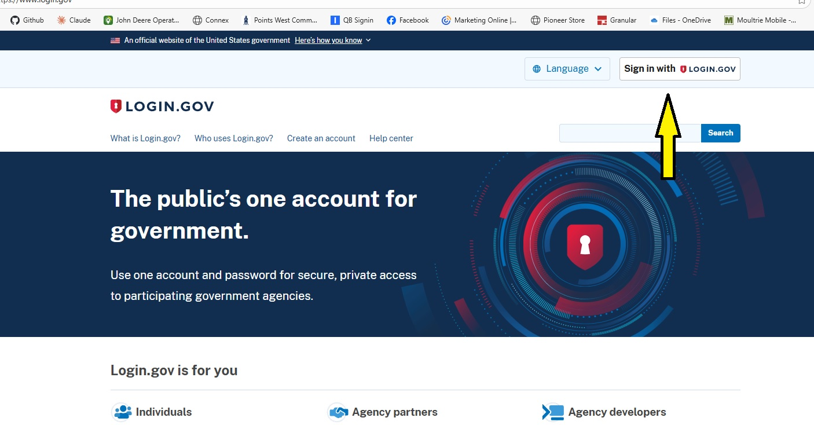
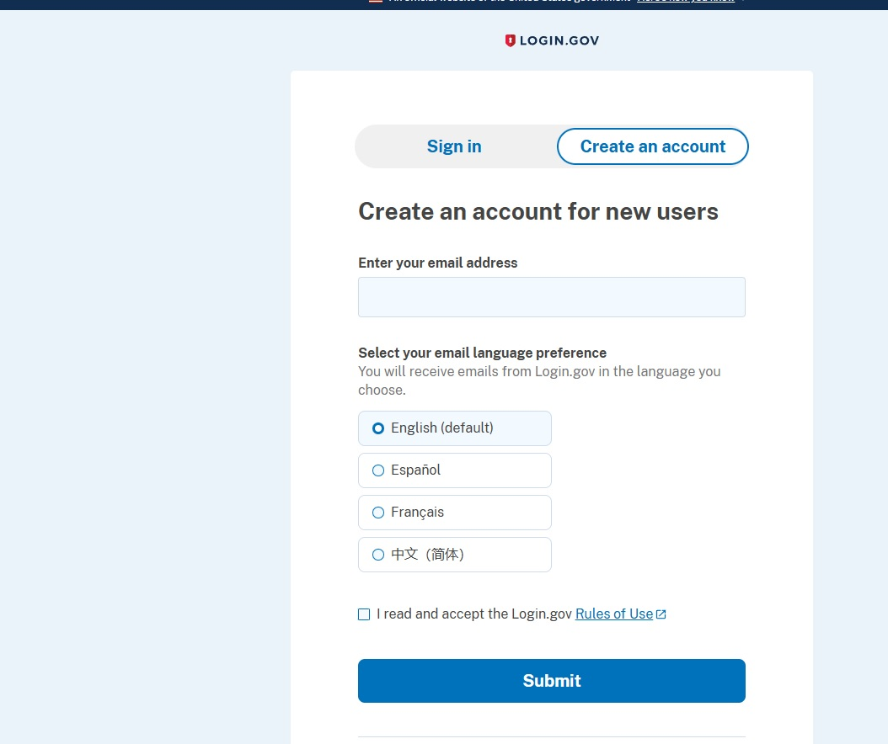

Why You Need a Login.gov Account
FSA is transitioning all online services to Login.gov. After February 28, 2026, you will need a verified Login.gov account to access FSA programs, file reports, and manage your farm records online.
You will need:
- An email address
- A phone number for two-factor authentication
- Your driver's license or state ID for identity verification
- Your Social Security Number
Go to Login.gov and Create an Account
Visit login.gov and click "Create an account" in the top right corner.
- Enter your email address
- Select English as your language
- Check the box to accept the Rules of Use
- Click Submit
- Check your email for a confirmation link and click it
- Create a strong password (at least 12 characters)
Set Up Two-Factor Authentication
Login.gov requires two-factor authentication to keep your account secure. The easiest option is text message (SMS).
- Choose "Text message" as your authentication method
- Enter your phone number
- You'll receive a code via text — enter it to confirm
Go to Farmers.gov and Link Your Account
Now visit farmers.gov and sign in using your new Login.gov credentials. This will connect your Login.gov account to USDA's system.
- Go to farmers.gov
- Click "Sign In"
- Choose "Login.gov" as your sign-in method
- Enter your Login.gov email and password
- Complete two-factor authentication
Verify Your Identity
This is the most important step. You must verify your identity to access FSA services. You have two options:
- Online: Upload a photo of your driver's license and take a selfie. Login.gov will verify your identity automatically.
- In Person: Visit your local FSA office or a participating Post Office with your driver's license. Staff will verify your identity on the spot.
Tip: If you're having trouble with the online verification, going in person to the FSA office or Post Office is the fastest and easiest option.
Getting a Clean Driver's License Photo
If you choose to verify online, you'll need to upload a photo of your driver's license. Here's how to get a clean, accepted photo every time:
- Place your license on a plain white sheet of paper on a flat surface
- Use a flashlight or phone light to eliminate shadows and glare
- Hold your phone directly above the license, not at an angle
- Make sure all four corners of the license are visible
- Turn off the room lights and use only the flashlight for the best result
- Avoid any reflection or glare on the holographic elements

Setup: white paper + flashlight

Flashlight only - no shadows

Clean, even lighting
Need Help?
If you get stuck at any step, call or text Kyle and we'll walk you through it.
Call (970) 571-1015